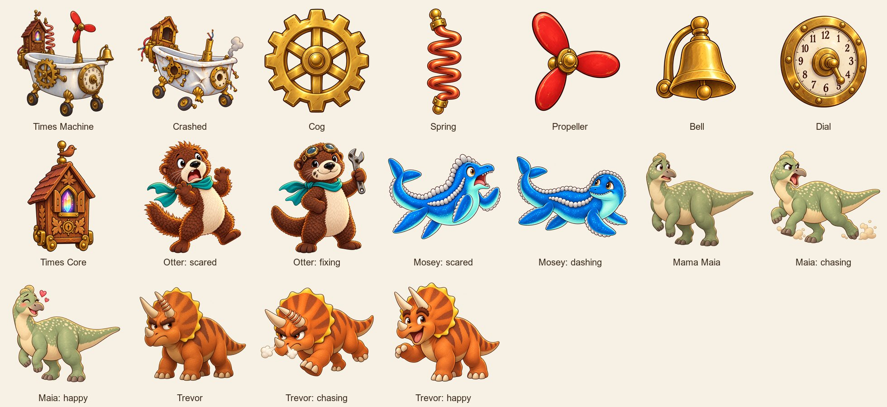
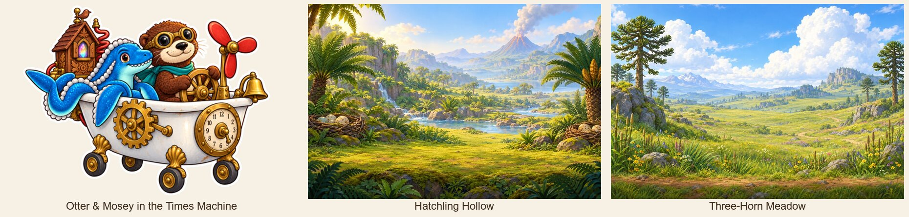

Prehistoric Times: M2 look and sound check
Everything new from milestone M2, for you to approve before more is made. All art is already in the app's asset catalogue; the sounds and narration are in the app bundle. Images: OpenAI (gpt-image-2.5), $1.41 in all. Sound and voices: ElevenLabs.
Decisions for you
- Mama Maia's voice: pick preview 1, 2 or 3 (below), or ask for another round. Preview ids expire after a while, so a pick soon avoids designing again.
- Trevor's voice: pick 1, 2 or 3. Preview 3 measured lowest (closest to "gruff"); 1 and 2 measured surprisingly high, so listen for whether they suit him.
- The look: the Times Machine, the two dinosaurs and the backgrounds set the style for the other four zones. Anything to change before M3?
- The T-Rex roar: is it fierce-but-fun, or too much (or too little) for your children?
Characters, machine and dinosaurs

Scenes

Roars and sound effects
Mama Maia's honk
Roar Rating 1: flustered, not fierce.
Trevor's snort and grumble
Roar Rating 2.
T-Rex roar
Roar Rating MAX: big but theatrical.
Dinosaur stomps
For chasers getting closer.
Times Machine starting
The opening whoosh back in time.
Crash landing
The machine bursts into six parts.
Mama Maia: voice previews
Preview 1
Median pitch 340 Hz.
Preview 2
Median pitch 390 Hz.
Preview 3
Median pitch 340 Hz.
Trevor: voice previews
Preview 1
Median pitch 314 Hz.
Preview 2
Median pitch 296 Hz.
Preview 3
Median pitch 121 Hz.
New narration (Alice, same voice as Lost Islands)
217 new clips: every 1, 6, 7, 9, 11 and 12 times-table fact as a product, a missing number and a division, plus "Find the missing number." Three samples: